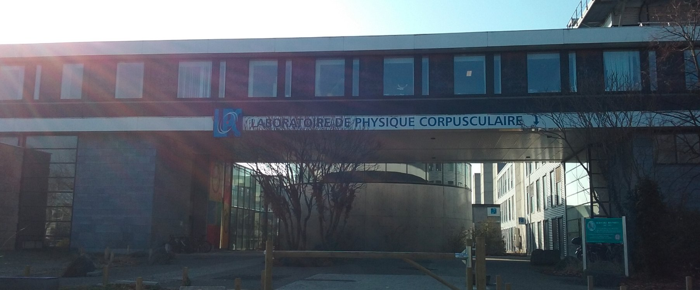

Home
About me
Curiculum vitæ
Research
Publications
Presentations
Teaching
Outreach
Contact
Romain MADAR
- LPC Clermont-Ferrand
4 avenue Blaise Pascal, 63178 Aubière, FRANCE
+33 (0) 4 73 40 71 57
romain.madarSPAMNOT@cern.ch
